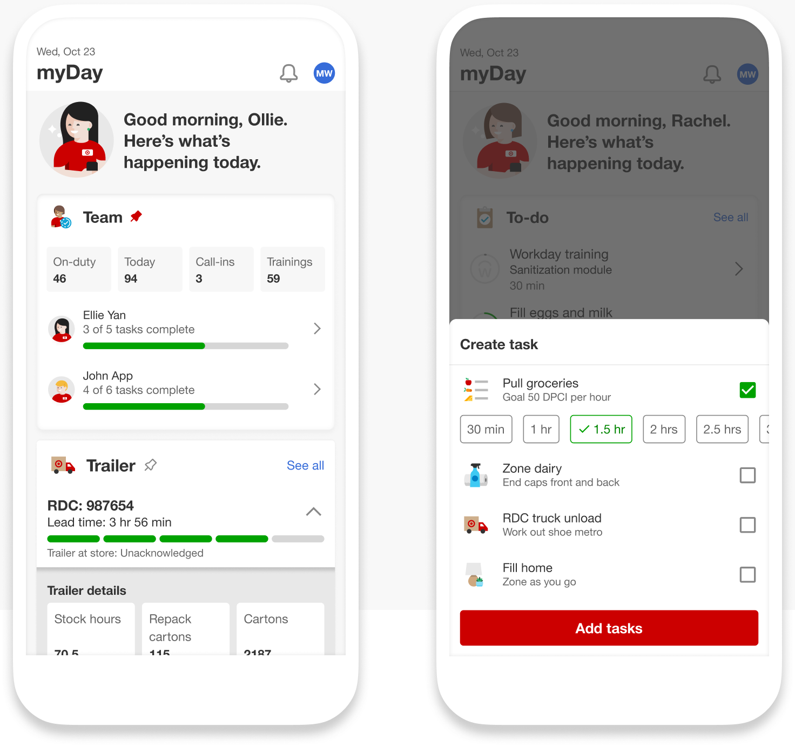
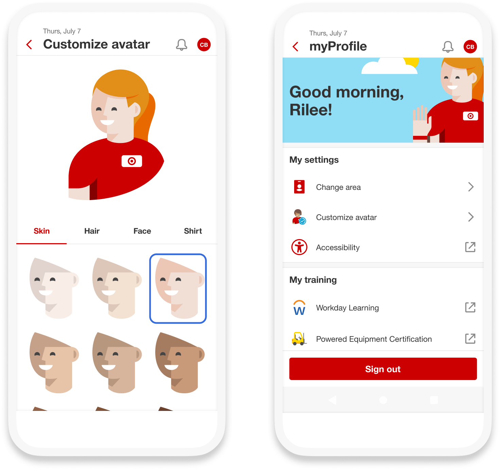
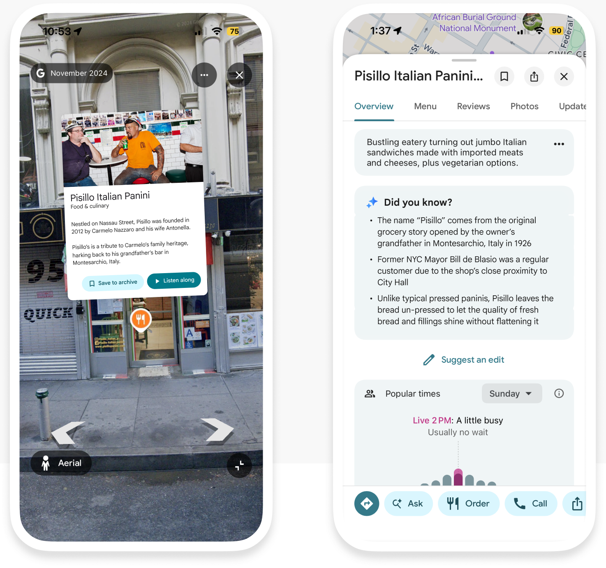
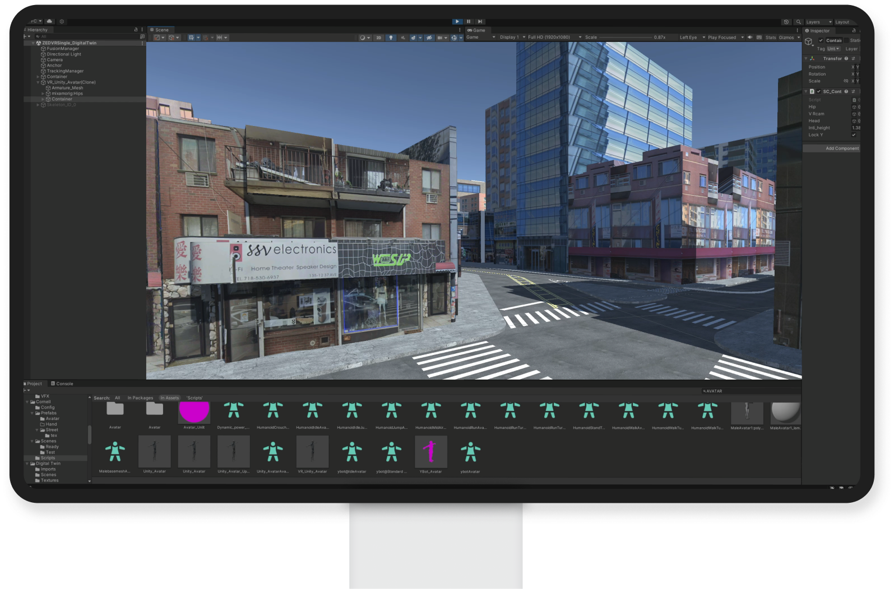
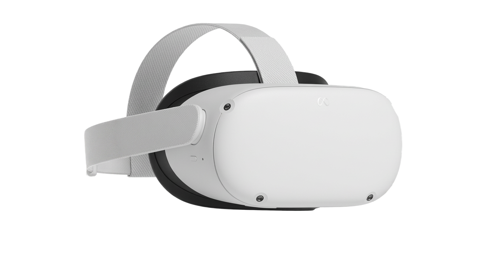

Task Management
Flexible workload management for Target store leaders

Avatars
Inclusive and delightful digital identities for team members

Culture Walk
Cultural discovery for citygoers, built into Google Maps

NYC Digital Twins
Studying AV-pedestrian interactions in a safe and controlled environment

